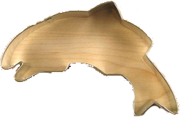

The Story
he story of the salmon cookies began 150-odd years ago. Great Grandma Sal and her husband, Great Grandpa Saul, were preparing the Christmas feast. Their contribution, a plate of seared salmon and a batch of cookies were already running late when their dear dog knocked Saul off balance and he dropped a fillet in the mixing bowl. Sal was mixing so fast she didn't notice and the wayward fish was positively blended in with the dough. Saul wisely chose to avoid informing his wife of his accident and their dishes went in the oven. Come dinner, the cookies were a huge hit but the only one who knew why kept his mouth shut. Or at least he did until the rest of the family was out of earshot. Granny took it upon herself to perfect the recipe and thus a tradition was born; a tradition which can now be enjoyed by you and your family.
|
|---|
| The first cookie made in our Seattle Kitchen. |

Locations
Pike Place: 1515 Pike Pl, Seattle, WA 98101
Seattle Center: Inside the Armory
Red Square: Across from Odegaard
Edmonds Beach: On the Boardwalk
King Street Station: 3rd St. South and S. King St.
Hours
Sals Scrumptious Salmon Snickerdoodles is open 7 AM to 8 PM every day.
Staff
If you're looking for a job email here: wearenthiring@sodoff.com
Cookies with salmon in them. Shaped like salmon. Maybe one day we'll have trout. Not yet.
Merchandise
Hey, what would you rather be? Naked or with clothes on. Clothes on? Yeah. Thought so. You like fish? Well, you better be. You're on a salmon themed site for chrissake. Tell you what. You come scroll down here, you come click the link down here. I'll hook you up with a site which not only lets you buy 1, not only 2, not only 3, but in fact, 7+ varieties of fish and baking themed shirts. Not just shirts either. You want pants? Got them. You want fish themed khakis? Got you covered. You want a hoodie where the hood looks like a fish is eating you? Got it. Just come on down here and click the link.
Pranked ya there isn't a link down here haha
Franchising
Hey if you make us money you get this slick cookie cutter.
